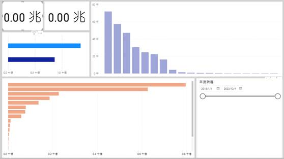
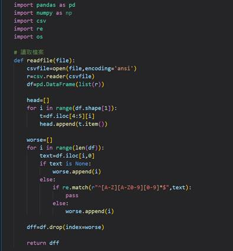
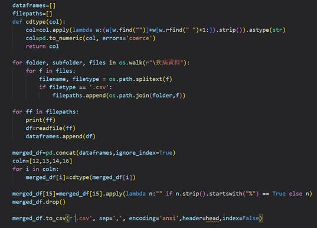

企業實習項目展示
實習內容
實習公司 : 富邦人壽保險股份有限公司
擔任職位 : 資料分析師
主要任務
使用公司的原始資料經過資料處理後，以Power BI製作報表供主管查看、評估。
使用Python撰寫資料處理流程的自動化，也撰寫Excel公式協助同事能快速整理、計算資料。
把在Access的MS SQL所做的資料處理流程，轉換成Power BI的M語言，達到主管所期望的直接使用Power BI做資料處理和報表。
提供資料工程方面的建議供主管參考。
專案經歷
TA(旅平險)報表
員工團保分析
理賠報表
製作報表 (因公司個資安全皆須把內容去除，實際上有做更多的報表)

製作保險商品比較的統計報表

製作理賠項目比較的統計報表

撰寫原始資料的處理再合併程式

實習感想
知識方面
1. 透過同事的授課，學習到關於團險的各種商品方案等
2. 了解大公司在各種作業流程上是如何運作的軟技能方面
1. 學習到應該如何與同事溝通、報告討論
2. 如果要和他人聯絡，知道該如何做開頭和表達自己的需求
硬技能方面
1. 更深入的了解如何使用power bi 和了解內部的power query 中的程式邏輯和特定的方法函式是如何撰寫的
2. 更熟悉SQL的語法
3. 了解公司處理資料的流程後可以撰寫程式碼鞋ˊ著作資料處你的自動化